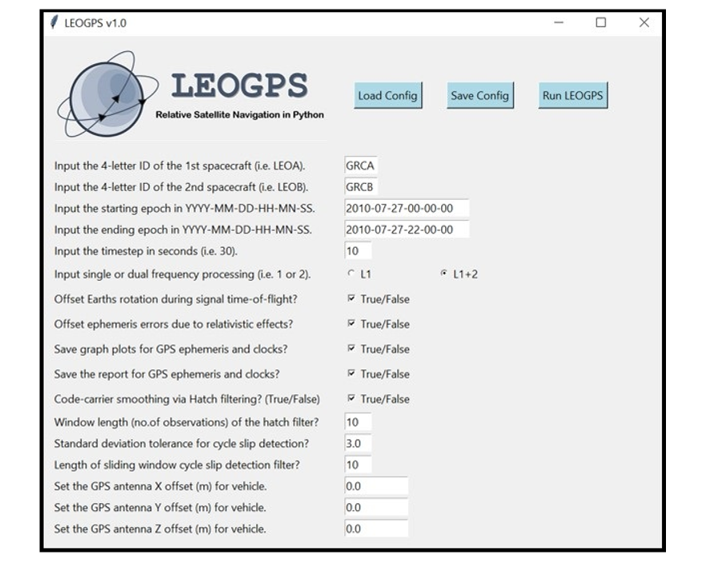

LEOGPS v1.1¶


By: Samuel Y. W. Low


LEOGPS is an open-source Python package that takes in GPS observations of formation flying satellites in pairs, to perform single point positioning (SPP) and precise relative positioning via carrier phase double-differential GPS (CDGPS). It currently supports only observations from the GPS constellation (L1/L2 frequency), with observation files in RINEX v2.XX format. LEOGPS gives credit to the University of Bern, for the CODE precise GPS ephemeris and clock files.
Note
Note that for formation flying applications, the purely kinematic CDGPS approach in LEOGPS is usually accurate up to 1m for baselines less than 200km.
1. Installation¶
First, find the LEOGPS GitHub repository in this GitHub link, and download it. Alternatively, if you have Git installed, you can open Command Prompt or your Git Bash, enter the directory of your choice, and type:
git clone https://github.com/sammmlow/LEOGPS.git
Second, you should do a pip install in your terminal of Martin Valgur’s Pythonic translation of Hatanaka (de)compression in Python:
pip install hatanaka
The Hatanaka library in Python was kindly contributed by Martin Valgur in v1.1, and replaces the older “RNX2CRX” and “GZIP” Windows-only executables, making the (de)compression possible across all operating systems.
That’s it! No further setup is needed, unless you need any of the other package dependencies.
Note
Package dependencies include: numpy (v1.14), matplotlib, hatanaka, unlzw3, urllib.request, PIL, tkinter, os, copy, math, datetime, decimal, shutil, subprocess, warnings
2. First Steps¶
First, launch LEOGPS by running ‘leogps.py’ in a Python IDE or your terminal, and you will see a user-interface (UI) with input parameters as shown below.
We may now proceed to run the default LEOGPS scenario that comes with the build, for the GRACE formation flying satellite mission.
On the UI, you can load the default configuration inputs (based on the GRACE formation on 27-07-2010), as an example. The default LEOGPS comes with two Hatanaka-compressed (file extension ending with ‘D’) RINEX observation files for GRACE A and B. To run the default example scenario, just click on “Run LEOGPS”, without changing any of the inputs. On saving or running LEOGPS, all inputs are saved in the ../LEOGPS/config/config.txt/ file. Once the processing starts, several things will happen.
First, notice that the RINEX observation files in the ../LEOGPS/input/ will automatically be Hatanaka-decompressed (file extension changes from ‘D’ to ‘O’). LEOGPS accepts Hatanaka compressed and uncompressed RINEX files.
Second, notice also that LEOGPS will automatically download daily precise (final) ephemeris and clock files from the University of Bern’s CODE FTP, and unzip them automatically. Ephemeris files downloaded will span one day before and one day after the scenario date(s) so that the GPS satellite orbit interpolation can be done beyond the edges of the scenario time-line to prevent edge effects (i.e. ringing, poor polynomial fits etc).
Third, the interpolated data of GPS ephemeris and clocks are saved and plotted in the ../LEOGPS/output/ folders (this option can be disabled in the configuration to speed up processing time).
Fourth and finally, the desired main output of LEOGPS - the SPP and CDGPS solutions, are saved in ‘LEOGPS_Results.txt’.
Note
In the default LEOGPS build, the ground truths for the GRACE formation are also provided in the ‘outputs’ directory. These truths are the precise orbit determination solutions, with relative positions validated by the GRACE formation’s actual K-Band ranging radar data.*
3. Running Your Scenarios¶
First, for your own custom scenarios, set the correct 4-letter ID and date-times of your spacecraft scenario. When saving or running LEOGPS, these inputs for your scenario and spacecraft will be saved in the ../LEOGPS/config/config.txt/ file which the GUI interfaces with. Note that configuration input strings follow a strict format.
Second, to use your own custom RINEX observation files, you should provide this in the /../input/ folder, with two RINEX (v2.xx) observation files, one for each LEO satellite, by pasting it in the ../LEOGPS/input/ folder. The file naming convention for the RINEX observation files is an 8-character string comprising the 4-letter ID of the spacecraft (you can create one arbitrarily), the 3-digit GPS day-of-the-year, followed by a single zero digit. The file extension is the last two digits of the year, followed by the letter ‘O’. If the RINEX observation is Hatanaka-compressed, then the last letter of the file extension is a ‘D’. For example, the GRACE satellites’ decompressed observation file names are:
GRCA2080.10O
GRCB2080.10O
The 4-letter ID of the two spacecrafts in the LEOGPS GUI must match the first 4-letters of the RINEX files provided!
Note
For help in understanding the RINEX format better, LEOGPS comes packaged with the RINEX v2.10 documentation in the utils directory.
For precise ephemeris and clock files, as long as the user has an active internet connection, you do not need to provide your own ephemeris and clock files, as LEOGPS will automatically source it. However, in the event where the FTP is down, but the user has their own precise ephemeris and clock files, you can transfer these files into the /../input/ folder and rename these files to follow the CODE naming convention so that LEOGPS detects these files and can use them offline without access to the FTP. The naming convention for precise clock and ephemeris files are also 8-character strings, starting with a ‘COD’, followed by the 4-digit GPS week number, followed by the 1-digit GPS day-of-week number. The file extension for precise ephemeris files is a ‘.EPH’ string, and for clock files it is a ‘.CLK’ string.
Note
For assistance with dates in GPS/GNSS formats, refer to the geodetic calendar here.
4. Overview of Processing Flow¶
A summary of the processing flow in LEOGPS is given by the flow chart below.
If the user wishes to use some of LEOGPS’ existing algorithms, such as the single-point positioning (SPP) in posvel.py on multiple LEOs, or to solve for multiple baselines, the file to edit the code where you can call these functions is in leorun.py. This is the main processing tree that runs internally behind the GUI.
5. Carrier Single Differencing¶
This segment of the LEOGPS documentation gets into the technicals of baseline estimation between formation flying satellites (or even between static stations in general), and it assumes that the user has sufficient knowledge on single-point positioning concepts. The algorithm described in this section is based on carrier phase differencing, and is largely implemented in the code file ambest.py (ambiguity estimation). For a tutorial on the more basic aspects of GNSS, the user is invited to peruse ESA’s NaviPedia.
Carrier phase differential GPS, or CDGPS in summary, is the technique of estimating the relative position of a receiver with respect to another, over a short baseline. The carrier signal’s phase is typically exploited for precise point positioning due to its ranging precision, rather than using the unambiguous code. In the case of GPS signals, the ranging accuracy of the C/A code signal is typically on the order of ±3m for a typical GNSS receiver (on the modernized GPS block without selective availability); whereas the ranging accuracy of the carrier phase of the signal is on the order of millimeters due to the accuracy achievable in most receiver phase-locked loops today.
The carrier phase range can be modelled as the observed phase, plus an integer number of wavelengths, and plus a series of systematic and random ranging errors. The goal of carrier phase differential GPS techniques is to remove these systematic ranging errors through differential measurements which cancel common and correlated sources of ranging errors observed by both receivers over a “short” baseline.
The integer number of wavelengths however, is unknown and must be estimated. This is known as the “integer ambiguity resolution” problem in GNSS literature, and it can be estimated as a float, with subsequent integer fixing techniques (i.e., wide-lane, narrow-lane, or if the error covariances are known, then integer fixing by Peter Teunissen’s LAMBDA).

Figure 5.1: Carrier phase ranging illustration highlighting the ambiguity N.¶
In any case, the receiver end only measures the instantaneous carrier phase modulo 360 degrees. It is unknown to the receiver how many integer cycles of the carrier signal has passed through the signal path taken from the emission from the GPS satellite to the receiver. Nevertheless, the RINEX file carrier phase observable would normally give an integer estimate nonetheless (usually using a pseudo-range model).
In order to very accurately characterize the range, the number of integer cycles, hereby known as N, must be made known. The integer ambiguity of the carrier phase is red-boxed below.

Equation 5.1: Carrier phase ranging model¶
On top of the integer ambiguity N, there are various other error sources that are modelled in the GPS signal range equation (Equation 5.1), of which are the following in descending order of importance and accuracy loss: the GPS satellite clock bias estimation errors, the LEO satellite clock bias, ionospheric path delays, and other relativistic effects such as clock advance effects and Shapiro path delays.
The key to mitigating errors is the realization that error components shown in Equation 5.1, are highly correlated among GPS receivers in proximity. Subtracting measurements (differencing) between receivers will therefore “cancel” out systematic errors between the LEO satellites.

Figure 5.2: Carrier phase single differencing between two LEOs¶
In the case of the single differencing scenarios, the absolute carrier phase measurements taken by two LEOs are subtracted from each other. Using the carrier phase ranging model from Equation 5.1, the error sources that are common to both are red-boxed below.

Equation 5.2: Common errors for a single differencing scenario¶
Since the baseline of the LEO satellites are expected not to deviate beyond 200km, it is considered “short”, and thus likely that the ionospheric errors are correlated. Also, this means that the total number of and pseudo-range IDs of GPS satellites in view will not be any different between the two LEOs. Thus, in the single differencing case, between two LEOs and some k-th GPS satellite, differencing the carrier phase measurements between LEO A and B will remove systematic biases in ionospheric path delays, the k-th GPS satellite clock offsets, and common relativistic effects.

Equation 5.3: Carrier phase single differencing equation¶
As a result, the single difference equation comprises only of the relative true ranges, the relative receiver clock bias estimation errors, and the relative carrier phase cycle integer ambiguities. For the epsilon error term, assuming both errors are Gaussian, this results also in a square-root-2 amplification in white Gaussian noise.
If the receiver clock bias errors are small, then the baseline can actually already be derived from the single difference equation with little consequence to the accuracy of the baseline AB.
Figure 5.3: Extraction of baseline vector AB from the single differencing equation.¶
In extracting the baseline vector AB in Figure 5.3, the experimenter makes a few assumptions. First, assume that the GPS satellite is far away enough such that the signal paths taken from the emitter to the receivers A and B are almost parallel. Second, assume also that the receiver will be able to estimate the direction vector from itself to the GPS satellite, which is given by g-hat in the Figure 5.3, without introducing new errors. This is possible only if coarse positioning estimates of itself is first achieved using the C/A or P code, and that the GPS navigation observables are correctly parsed. In most cases, since the distance of the GPS satellite to the LEO is on the order of about ~20,000km, any coarse positioning errors on the meter-level scale would not significantly affect the accuracy of the estimation of the g-hat vector. Next, a very rough estimate of the integer ambiguity can be estimated as a float using the pseudo-range values ρ from code measurements, and the known carrier wavelength λ.
One can now solve for the AB vector as seen in Figure 5.3, notwithstanding the fact that the receiver clock bias estimation errors were not cancelled out and will thus show up in some form in the accuracy of the positions. The single differenced baseline solution from LEOGPS for a 100km baseline separation is shown below:
Figure 5.4: Relative position error norm of a single differenced 100km LEO baseline.¶
Observably, the single differenced solution still faces an accuracy > 1m. Embedded in the error plots are likely the unaccounted relative receiver clock bias estimation errors, minor error sources such as antenna phase centre variations, et cetera, which were not differenced away, as well as other white noise error sources.
Note
Every step of differencing amplifies the random error sources by root-2, assuming the noises are well-modelled as a Gaussian.
6. Carrier Double Differencing¶
We can actually go one step further beyond single differencing, and that is to difference across two reference GPS satellites. This step is called double differencing, and it is the backbone of the algorithm used in LEOGPS. This removes the relative receiver clock bias estimation errors, and this section will detail the algorithm and the results below.

Figure 6.1: Carrier phase double differencing equation setup.¶
The key idea behind double differencing, is to create a differential between two single difference equations. For example, between two LEO units A and B, if some GPS satellite P was taken as the reference emitter satellite in the single difference equation, then a second single difference equation would be taken with respect to a different GPS satellite Q as the reference emitter. In both single difference equations, it makes no difference to the relative receiver clock bias estimation which reference GPS satellite is used, as these are the errors specific only to the receiver-side in the relative sense.
Thus, taking two single difference measurements, one can observe that the relative receiver clock bias estimation error has now become a common error source in the double differenced equation, which can be cancelled out (both relative receiver clock bias terms in the red box in Figure 6.1 are actually the same and thus they cancel).

Figure 6.2: Extraction of the true baseline vector via double differencing.¶
In a similar fashion to the single differencing algorithm, the double differencing algorithm requires the estimation of the unit direction vector from the LEO A to reference GPS satellite P, and from the LEO B to the reference GPS satellite Q. Once again, with the double-differenced relative range, and on the assumption that the signal path pairs from P to AB are parallel, and the path pairs from Q to AB are also parallel, one can de-construct the baseline vector AB since each single difference observation forms the base of a right-angled triangle.
Since two reference satellites are now used in the creation of a double differenced equation, for N number of common GPS satellites in view, one can expect N-1 number of double differenced equations. Solving the entire system of equations leads to the baseline vector solution, with the error norm plotted below (error taken against a ground truth for two LEO units at a 100km baseline separation). It is observed that the final elimination of receiver clock biases creates an almost ten fold increase in the navigation accuracy.

Figure 6.3: Relative position error norm of a double differenced 100km LEO baseline.¶
In its essence, the single differencing paradigm changed the structure of the navigation problem, eliminating most nuisance errors, while the double differencing paradigm went further and essentially eliminated the receiver clock bias at the expense of one equation in the entire system of equations, while also redefining the ambiguity term into a double-differential ambiguity.
Note
We can actually go one step further and perform triple-differencing, that is, performing a differencing measurement between two double-differences. This eliminates the ambiguity entirely, but it amplifies the random errors by another factor of root-2, and it further reduces the degrees of freedom by one, from N-1 to N-2, N being the number of GPS satellites. At that point, some may argue that estimating the ambiguity with the C/A range on a double-differencing measurement would give a better accuracy then.
7. Contact and Support¶
For bugs, raise the issues in the GitHub repository.
For collaborations, reach out to me: sammmlow@gmail.com (Samuel Y. W. Low)


The project is licensed under the MIT license.